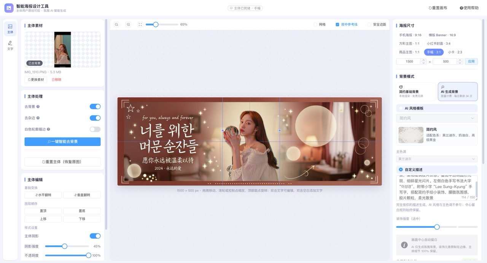
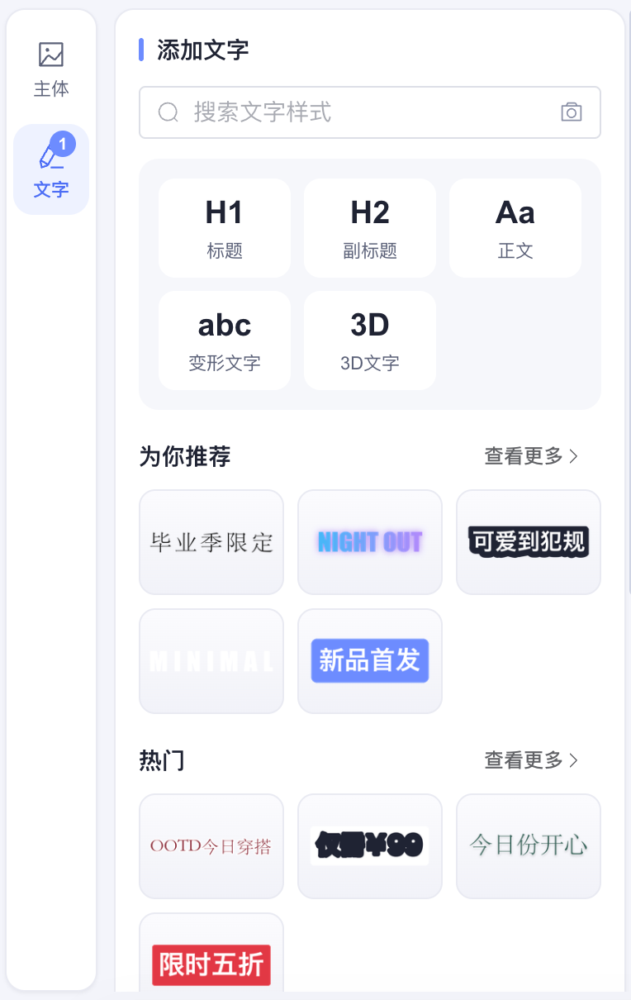
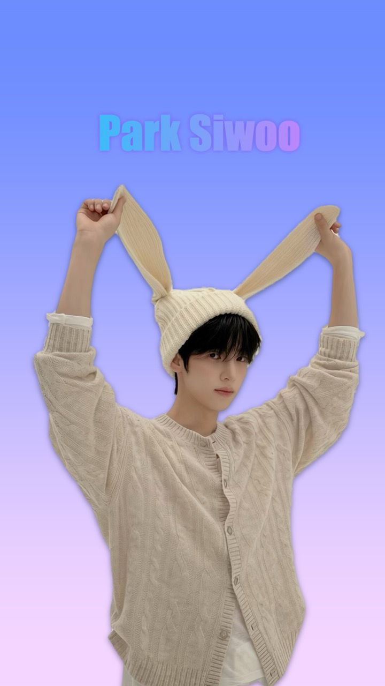
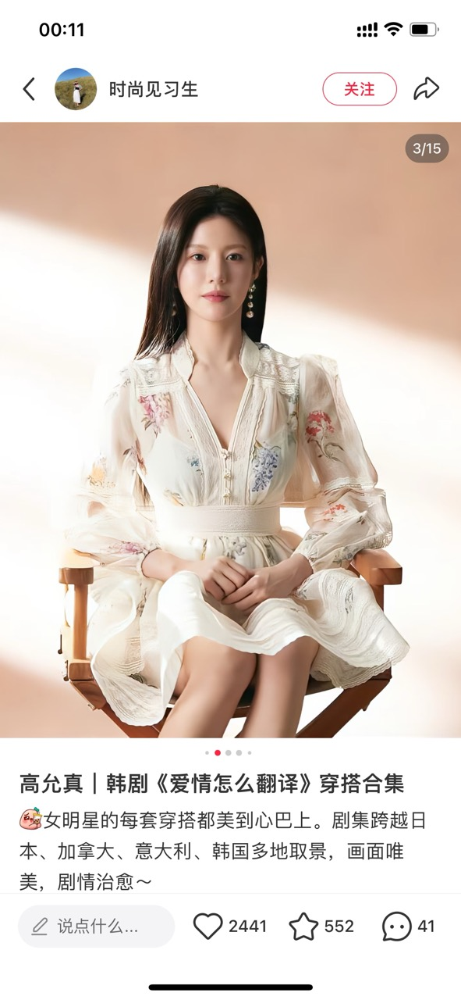
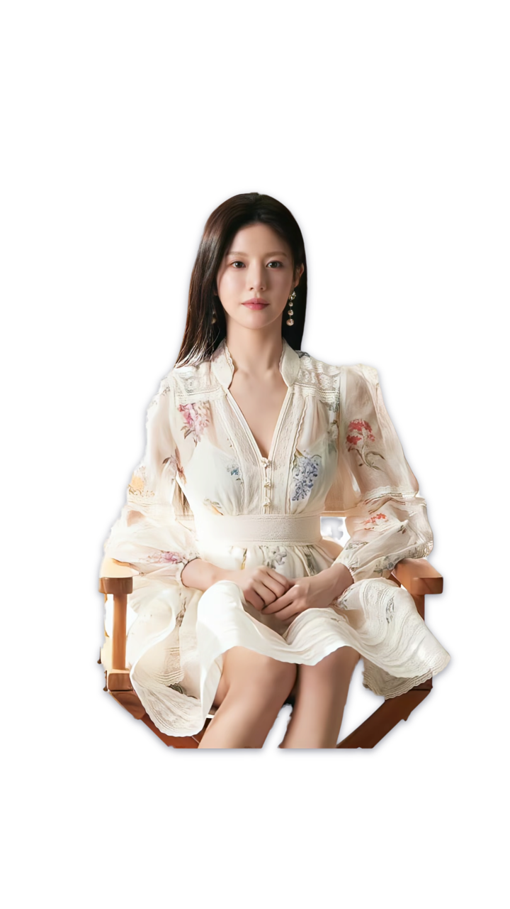
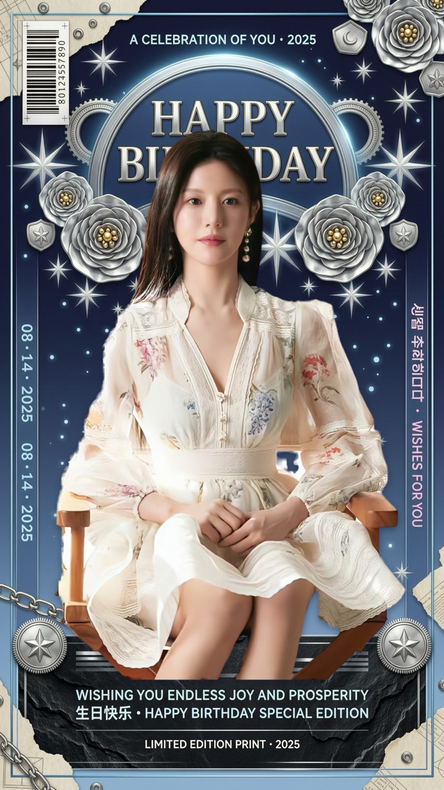
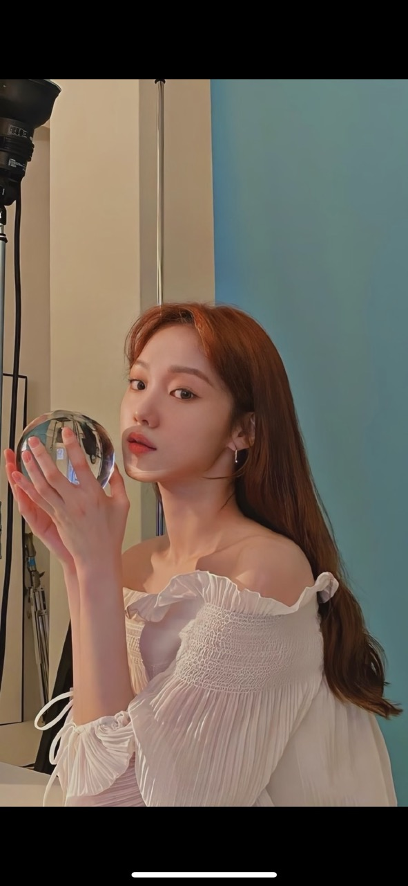
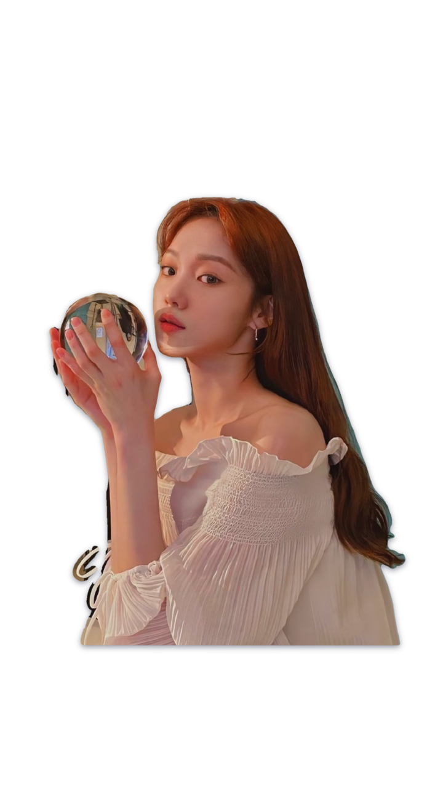
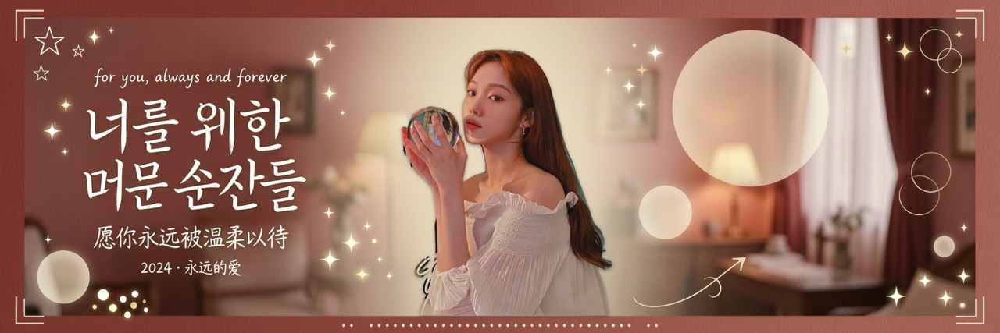
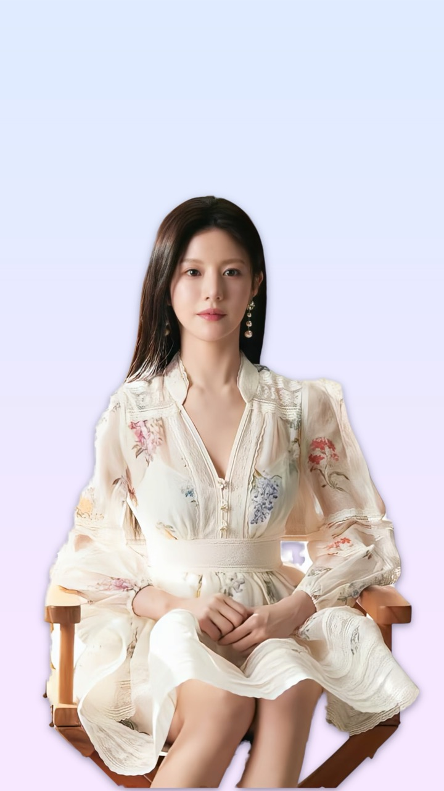

重新定义视觉创作 · 原创可控与AI智能生成的完美融合
主体用户原创可控，可使用AI智能生成。3步搞定明星生日应援海报、卡片、个性超清手机壁纸等设计图，告别繁重PS图层。

三大经典场景 · 极简流程演示
打破传统修图繁琐步骤。只需一张主体照片，通过抠图、主体参数调整与自适应背景，秒级完成工业级成品输出。
例 1：生成手机壁纸
从日常生活照片到清新质感手机壁纸，支持艺术排版与渐变渲染
上传图片
支持JPG/PNG原图导入，即使光照复杂也能自动识别主体轮廓。
抠出白底图
智能模型瞬时剥离繁杂背景，边缘细腻过渡，主体细节完整留存。

添加文字与排版
内置艺术字体库（如荧光发光体、3D立体字），一键层叠。

基础背景合成
无缝叠加纵向梦幻粉蓝渐变，调配阴影虚化，极简高清壁纸直接保存。
例 2：生成海报图 (明星/生日/电商宣发)
主体精准可控 + 提示词AI深度生成，重塑高定级赛博复古海报
上传图片与素材

支持从小红书、相册直接拖拽图片。即使带有复杂拍摄景深与座椅家具，引擎均能毫秒完成主体解析。
抠出白底图与主体编辑

主体自由拖拽缩放，配备对齐参考线、阴影强度滑杆及去杂边开关。确保人像或产品在画幅正中央完美居中。
AI 生成背景

智能生成金属质感、罗马柱、冷艳银花与高级排版,主体百分百保持原质感，一键导出印刷级海报。
例 3：生成手幅与小卡设计 (爱豆应援 / 唯美周边套系)
从原始生活照到2:3梦幻小卡与3:1宽幅手幅，全套应援物料一键同步生成
上传图片素材

小红书/日常活动照片直接导入，无论现场杂乱背景与拍摄光照，算法秒级识别主体轮廓与人像层级。
抠出白底图与主体编辑

精准分离人物发丝与透光玻璃球质感，保留锁骨与蕾丝边缘，支持翻转、缩放与自适应居中对齐。
生成小卡图、排版文字
生成带有爱心发光光晕与星芒边框的梦幻杏粉渐变背景。
根据提示词 AI 生成手幅背景 (3:1 超宽横幅应援物料)
利用同一套抠图主体，无缝扩展为横版全景现场应援手幅与长条宣传Banner

三大核心支柱 · 解锁视觉质感跃迁
从底层算法到交互设计，皆为极致创作品质量身打造。
主体精准可控
告别传统AI生成人脸失真、手指变形的硬伤。用户上传的主体保持原生像素保真度，拥有独立完整控制面板。
- check_circle 一键去背景、自适应边缘抗锯齿去杂边
- check_circle 白色轮廓描边（贴纸风/二次元轮廓）
- check_circle 主体投射阴影强度 (0-100%) 与模糊度
- check_circle 水平/垂直镜像变换与图层顺序置顶/置底
双模背景引擎
既能制作日常简约手机壁纸，亦可调用云端AI生成繁复华丽的明星应援与商业级大促海报。
纯色简约、纵向/横向渐变、径向渐变、细格纹、磨砂质感、细闪星光。
自动中心留白，画面主体细节100%保留，仅在画布按要求生成背景图。
多端全尺寸预设
预装主流社交矩阵全规格，一键切换画幅，主体自动跟随参考线对齐居中，无需二次裁切。
同一个主体 · 随心切换万千风格
只需更换提示词或切换背景预设，同一张原图即可在极简冷调日常壁纸与璀璨舞台庆生海报之间自如转换。

“以前给爱豆做生日应援手幅和小卡，要开PS调遮罩再加笔刷排版至少2小时。用Lumina直接导入生图，提示词敲入'蓝调复古金属花'，1分钟直接成图，印刷分辨率也完全没问题！”
“做小红书美妆与穿搭笔记封面，最怕背景杂乱抢了人像风头。通过主体阴影调节和纵向渐变壁纸模式，能迅速把日常自拍转为高级极简杂志感大片，爆款率翻了三倍。”
“电商大促期间需要为几百款商品换上赛博朋克和节日氛围背景。Lumina的多尺寸预设与主体100%保留机制，让我们无需重新拍摄商品，直接批量生产各渠道Banner。”